http://screenx.tv/
http://github.com/screenxtv
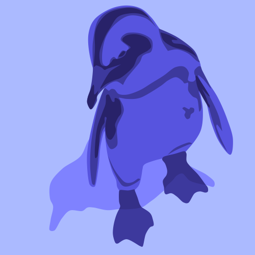
Tomoya Ishida
@tompng
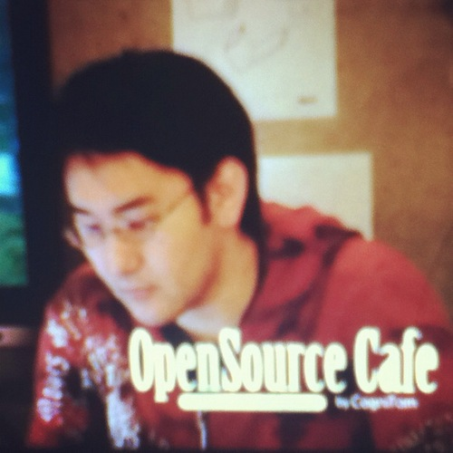
Yohei Yasukawa
@yasulab
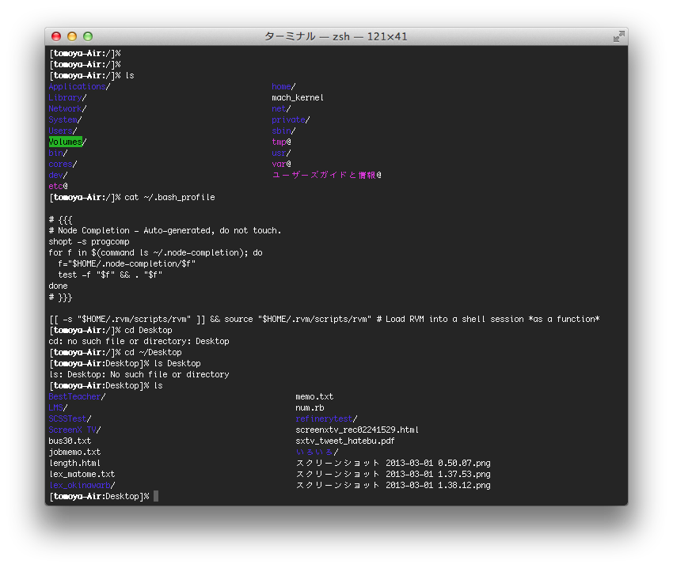
Terminal
Programming Scene
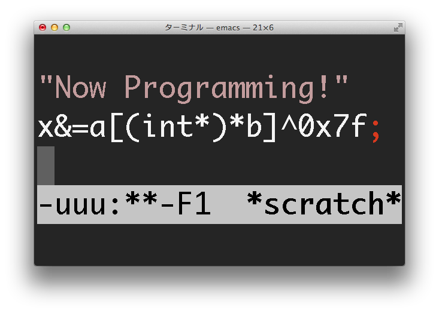
 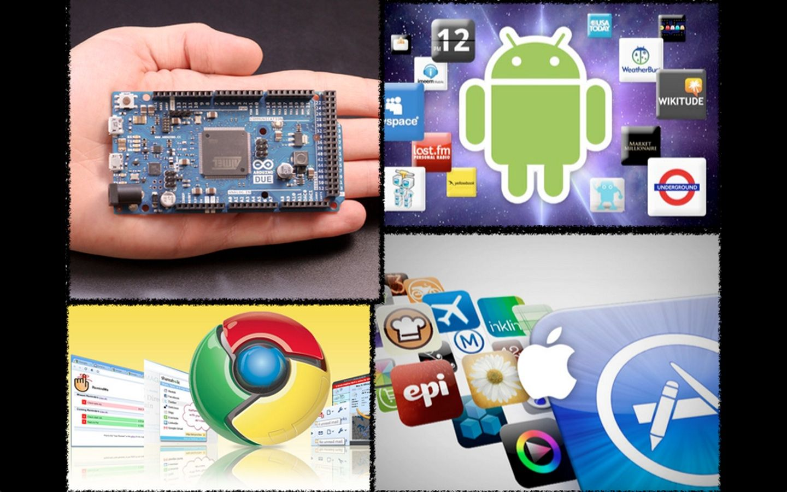
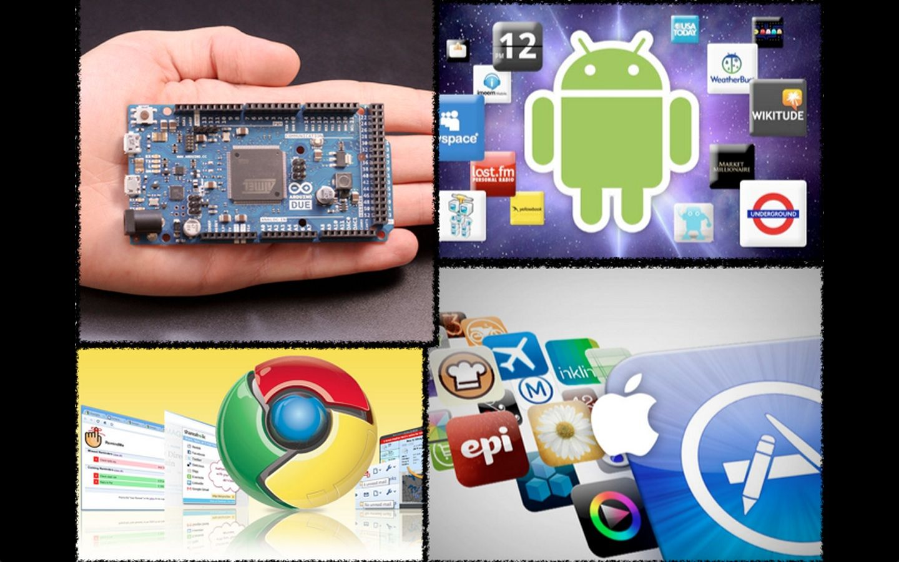
What
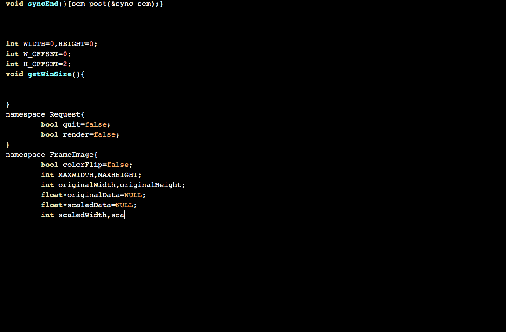
How
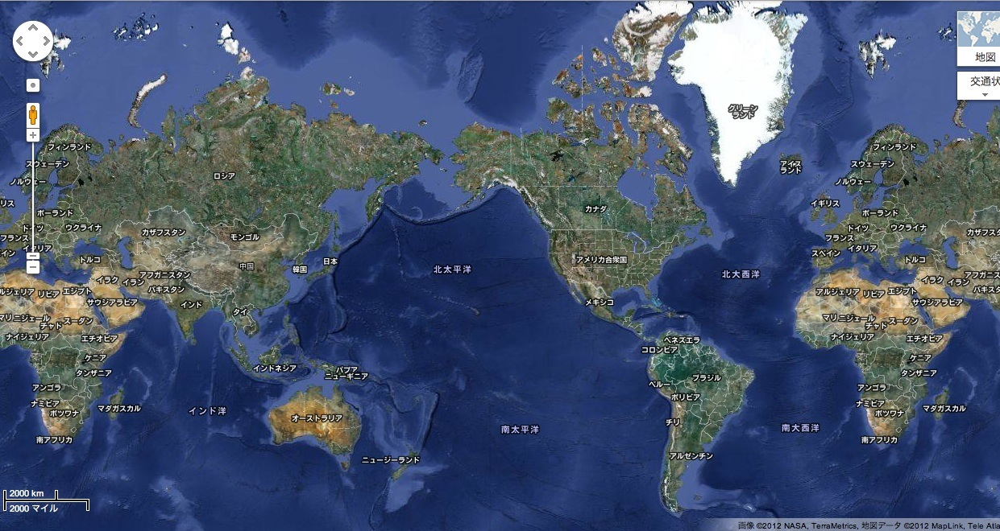
ScreenX TV Users
Taiwan
Japan
America
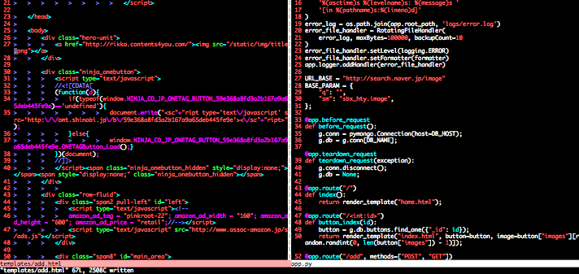
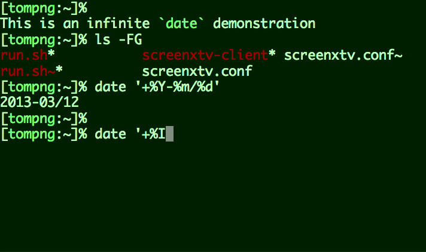
Why?
Usecases include
- Collaborative Learning
- Blog Plugins
- Study Session
Usecases include
- Collaborative Learning
- Blog Plugins
- Study Session
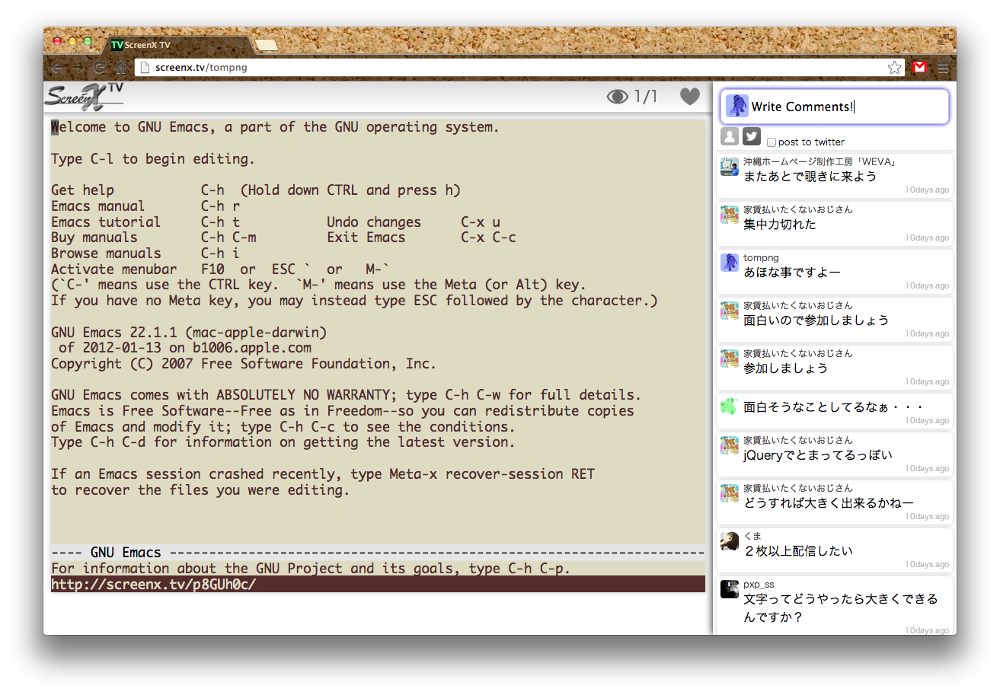
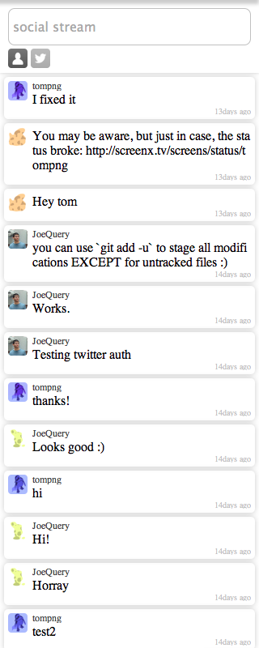
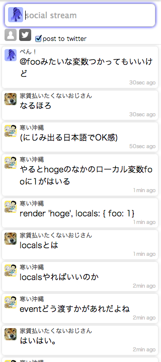
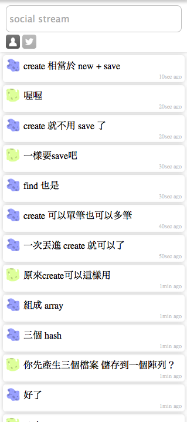
Usecases include
- Collaborative Learning
- Blog Plugins
- Study Session
Usecases include
- Collaborative Learning
- Blog Plugins
- Study Session
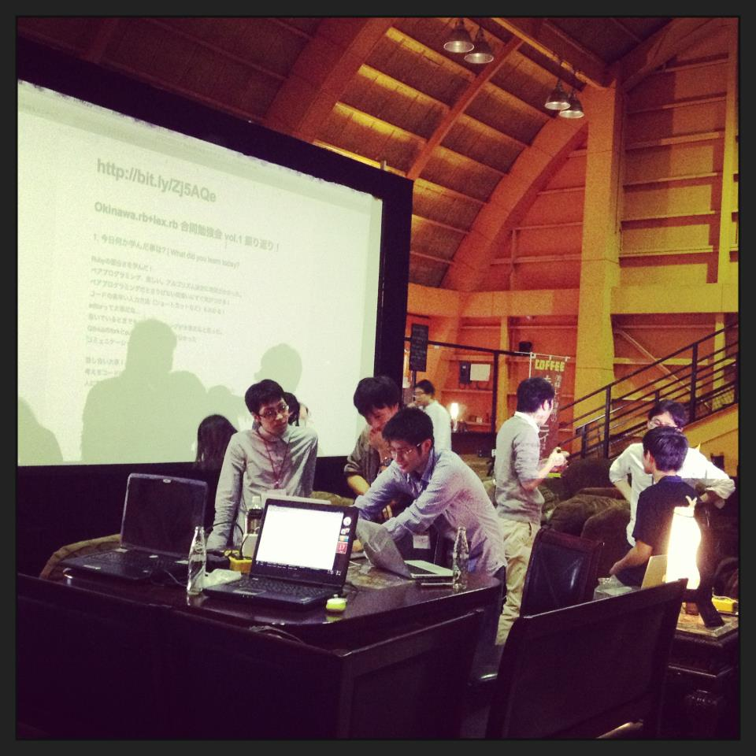
Study session
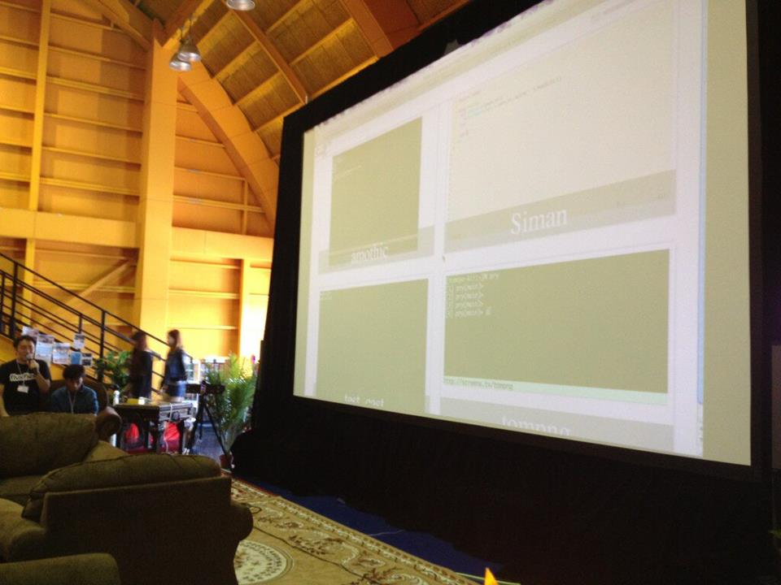
Study session
If interested in,
- feel free to broadcast.
- check out GitHub repos.
- contact me to see production code.
http://screenx.tv/
http://github.com/screenxtv
Tomoya Ishida
@tompng
Yohei Yasukawa
@yasulab